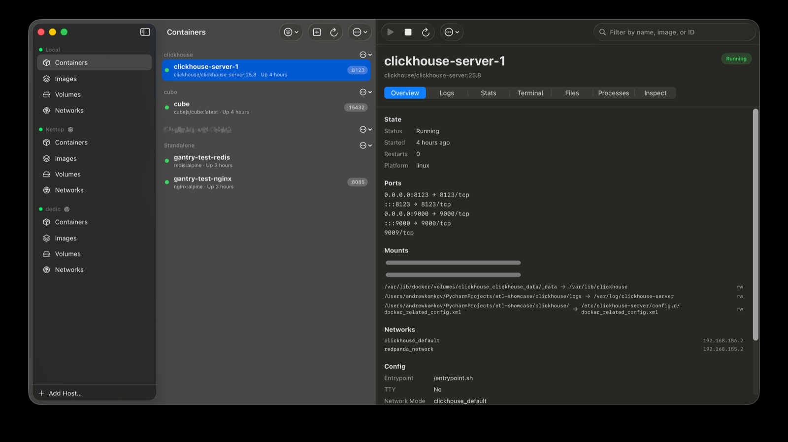
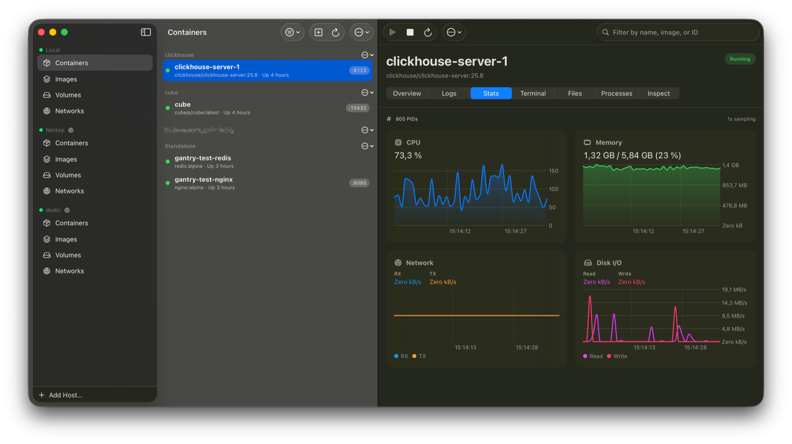
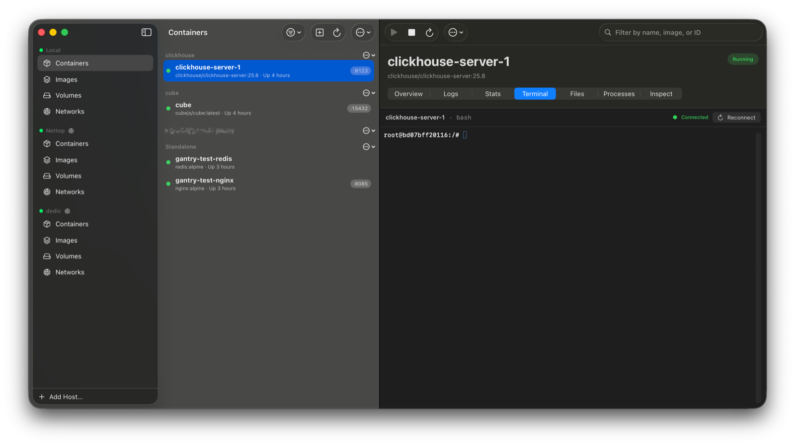

Gantry
Native Docker management for your Mac. Local and over SSH. Agent-ready with a built-in MCP server. Free, open source, no limits.
macOS 26+ · Apple Silicon & Intel · MIT license · MCP server included
Everything Docker, the Mac way
A complete control plane for your containers — fast, focused, and right at home on macOS.
Containers, images, volumes, networks
Manage every Docker resource from one clean, unified interface.
Live logs with search
Tail container output in real time and filter instantly as it streams.
Real-time stats with charts
CPU, memory, network and I/O graphed live for every running container.
Built-in exec terminal
Drop straight into a shell inside any container — no command needed.
Container file browser
Explore the filesystem and move files in and out with drag & drop.
Remote hosts over SSH
dial-stdio tunneling, key auth, TOFU host keys, secrets kept in the Keychain.
Compose project grouping
Containers organized automatically by their Docker Compose project.
Menu bar quick actions
Start, stop and check status from the menu bar without opening the app.
Create, pull & prune
Spin up containers, pull images with live progress, and reclaim space.
Agent-friendly
App Intents for Shortcuts, Siri & Spotlight, plus a built-in MCP server for AI agents.
Auto-updates via Sparkle
New releases install themselves — securely and out of your way.
Secrets stay yours
SSH credentials and host keys are stored locally in the macOS Keychain.
Built different
No web wrappers, no daemons of our own. Just a fast, native Mac app talking straight to Docker.
100% native SwiftUI
Not Electron. A real Mac app that launches instantly and sips memory.
Swift 6
Modern, concurrency-safe codebase built on the latest Swift toolchain.
Direct Engine API
Talks to the Docker Engine API directly over the unix socket — no shelling out.
SSH like docker -H
Tunnels exactly like docker -H ssh:// using docker system dial-stdio.
A closer look
Designed to feel like it shipped with the OS.



Install in a minute
No App Store, no account. Download and drag.
brew install --cask getgantry/tap/gantry
xattr -dr com.apple.quarantine /Applications/Gantry.app- 1Download & unzip
Grab the latest
.zipfrom Releases and unzip it. - 2Drag to Applications
Move
Gantry.appinto your/Applicationsfolder. - 3Open it the first time
Gantry isn't notarized, so right-click the app and choose Open to confirm the first launch.
xattr -dr com.apple.quarantine /Applications/Gantry.appWire it up for AI agents
Gantry ships a built-in MCP server. Register it with Claude in one command:
claude mcp add gantry -- /Applications/Gantry.app/Contents/Resources/gantry-mcp